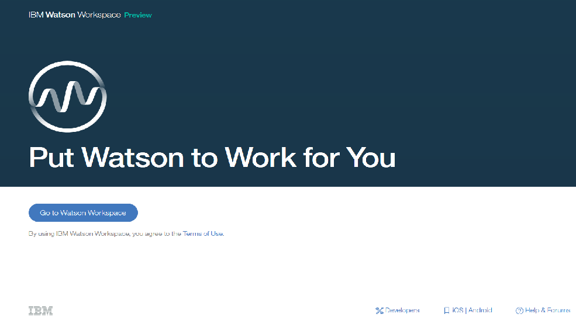

Cognitive Workspace - IBM
Currently undertaking my 4th Year project in conjunction with IBM. This entails visiting their campus bimonthly and working with an IBM Mentor to complete a project specified by them. Project is based on using IBM’s Watson to introduce machine learning into messaging services. Developed using Spring framework, the application can retrieve metadata from IBM Watson endpoints and display them to the user via Workspace, an internal messaging service.
